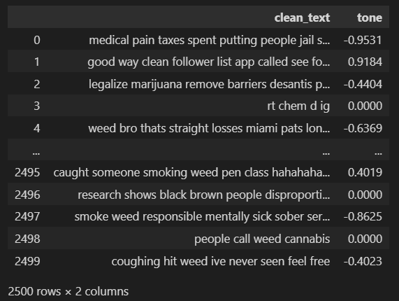
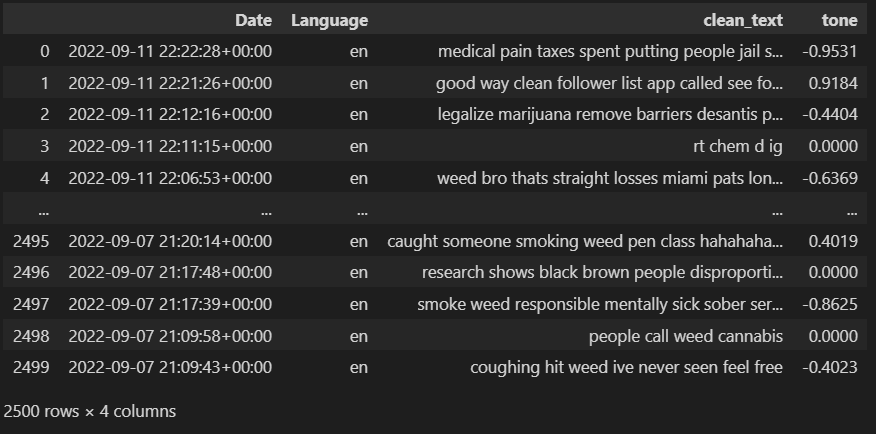
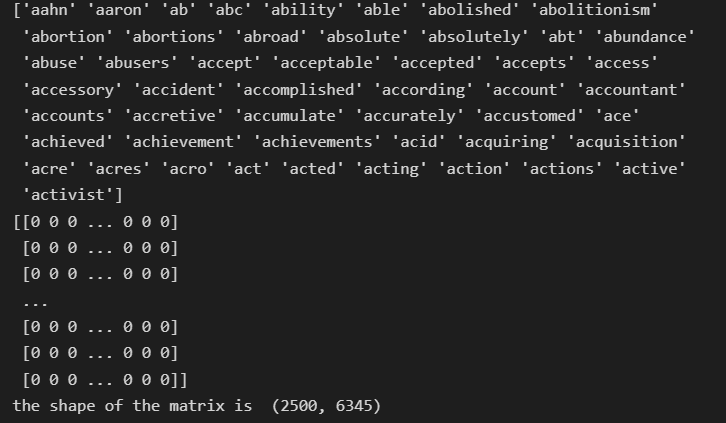
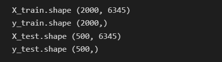
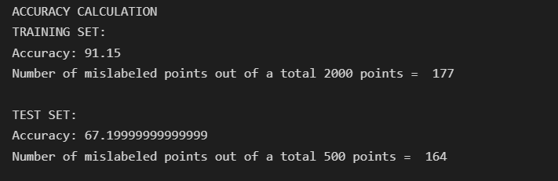
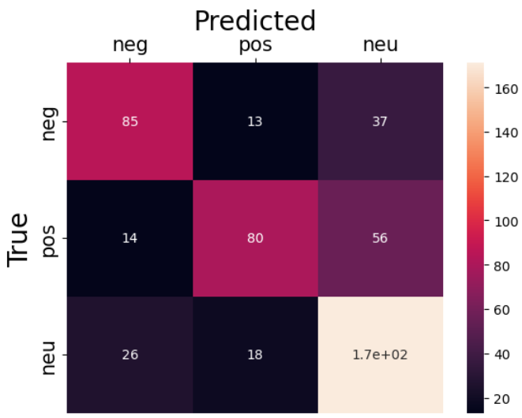

Naïve Bayes Python
This the dataset I will use for the Naïve Bayes model
And this is the Code for reference
Prepare the Data
The dataset we are going to use for this section consists of 5 columns and 2500 rows. We are going to choose
column "Text" and column "Tone", and apply Naïve Bayes classification to classify the tone of each Text.
Select column "clean_text" and column "tone"

Change the values in the column "tone"
- set value = -1 for the values in range [-1,0), represents the negative tone
- set value = 1 for the values in range (0,1], represents the positive tone
- set value = 0 for the values is equal to 0, represents the neutral tone

Data Modelling (Naïve Bayes classification)
Vectorize the Text
Text Vectorization is the process of converting text into numerical representation

Built up the train dataset and the test dataset
We split the dataset into two parts. One part is used for train the model and another part is used for testing the model performance
We are performing a train test split on our dataset. We are providing the test size as 0.20, that means our training sample contains 2000 training set and test sample contains 500 test set

Train the MultinomialNB model
We use the MultinomialNB from scipy and put the train test in
Model Evaluation
Result Summary

As we can see above, the accuracy of train data is 91.15% and we got 177 mislabeled text out of a total 2000 text
For the test data, we only got 67.2% accuracy and there are 164 mislabeled text out of a total 500 text
Confusion Matrix

Explanation for the Result
True Positive
- The True Positive for the negative tone is 85, which means 85 texts with negative tone are correctly classified.
- The True Positive for the positive tone is 80, which means 85 texts with positive tone are correctly classified.
- The True Positive for the neutral tone is 170, which means 170 texts with neutral tone are correctly classified.
True Negative
- The True Negative for the negative tone is 14+26+13+37 = 90
- The True Negative for the positive tone is 13+18+14+56 = 101
- The True Negative for the neutral tone is 26+18+37+56 = 137
False Positive
- The False Positive for the negative tone is 14+26 = 40, which means 40 texts with non-negative tone are incorrectly classified as negative
- The False Positive for the positive tone is 13+18 = 31, which means 31 texts with non-positive tone are incorrectly classified as positive
- The False Positive for the neutral tone is 37+56 = 93, which means 93 texts with non-neutral tone are incorrectly classified as neutral
False Negative
- The False Negative for the negative tone is 13+37 = 50, which means 50 texts with negative tone are incorrectly classified
- The False Negative for the negative tone is 14+56 = 70, which means 70 texts with positive tone are incorrectly classified
- The False Negative for the negative tone is 26+18 = 44, which means 44 texts with neutral tone are incorrectly classified
Conclusion
We tokenize the 2500 Tweets into single words and vectorized them as a matrix. By applying the MultinomialNB from scipy, we can successfully predict 91% of data from train set and 67% of data from
test set. Since we have 3 different labels which are "Negative", "Positive" and "Neutral", I think 67% accuracy is good enough for the model with 3 different labels. Also, based on the confusion matrix
, the values of TP and TN is much higher than FP and FN, so the model is able to predict the correct tone of the input text.